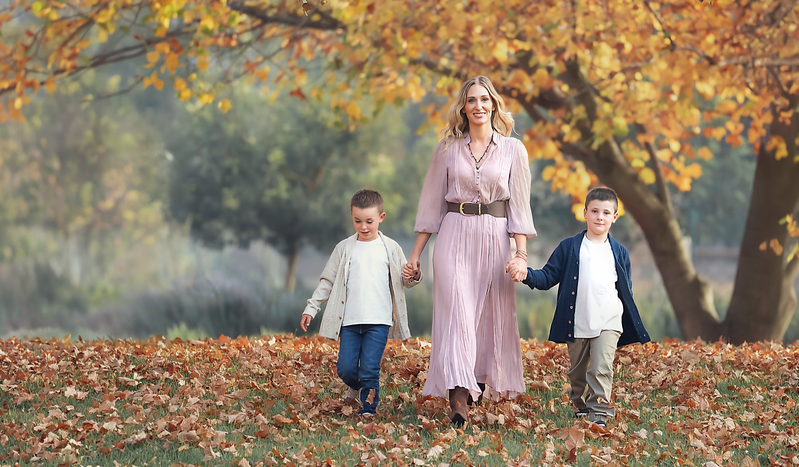
en Scarsdale, New York
¡La sesión más bonita del año ya llegó a New York!
Esto que estás viendo no se repite hasta un año más 🍂
Hay momentos que pasan tan rápido que solo te das cuenta cuando ya terminaron… y esta es tu oportunidad de guardarlos.
Soy fotógrafa Fine Art, mamá de 5 hijos y abuela de 2.
Después de tantos años fotografiando niños y familias, sé lo importante que es guardar cada etapa. Los hijos crecen, cambian sus gestos, cambian sus relaciones y un día esas pequeñas cosas que hoy parecen cotidianas se convierten en los recuerdos que más queremos conservar.
“No se trata solo de una foto bonita, sino de guardar una etapa.”
Mi experiencia está para ayudarlos: yo me preocupo de la luz, la composición, el entorno y de guiarlos durante la sesión. Ustedes solo tienen que estar juntos.
Cada sesión se prepara con cuidado: la luz, el vestuario y cada detalle que ayudará a crear fotografías llenas de vida y personalidad.
Durante la sesión los voy guiando para conseguir tanto esos retratos que querrán tener siempre, como los momentos espontáneos que hacen única a cada familia.
Ustedes disfrutan. Yo me encargo de todo lo demás.
Momentos reales, sin poses rígidas.
Yo los guío durante toda la sesión.
Una edición cuidada y reconocible.
Mascotas siempre bienvenidas.
Sólo domingo 4 de octubre 2026 🍂
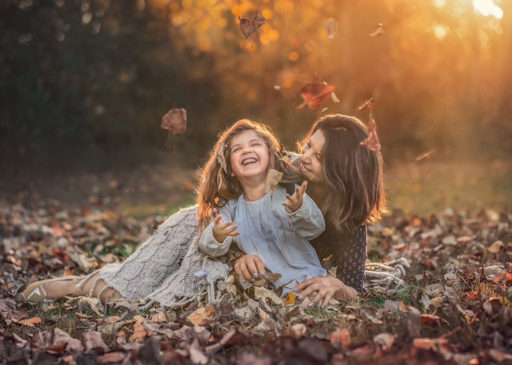
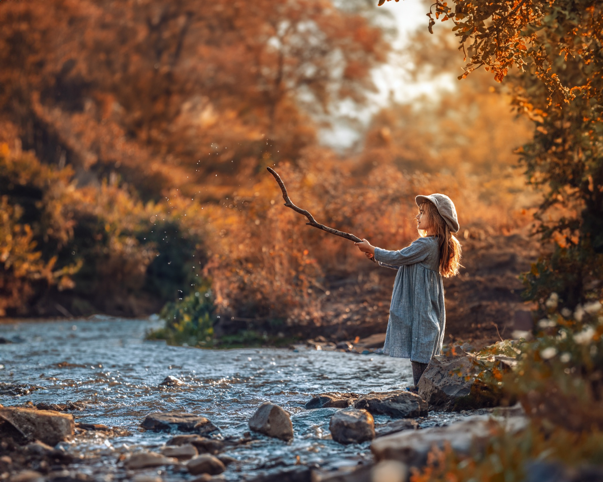
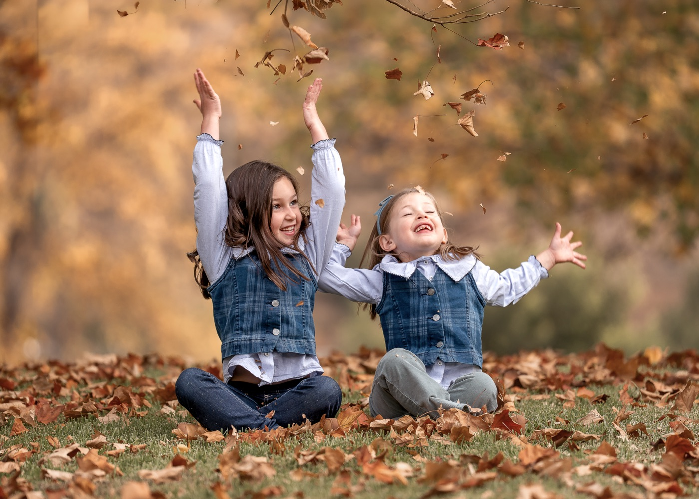
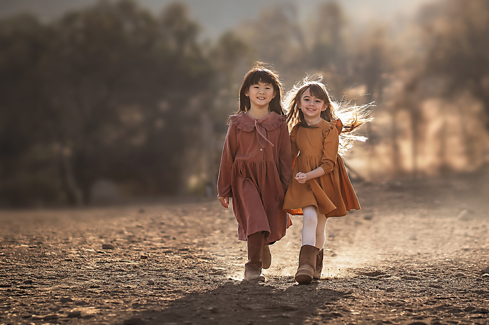
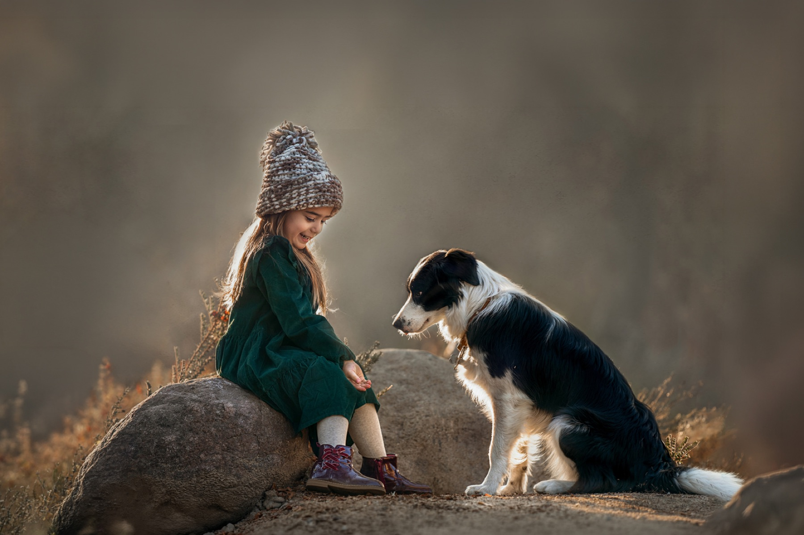
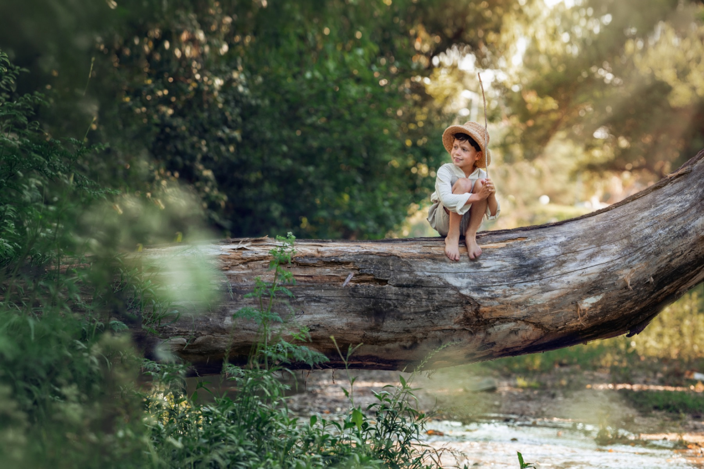
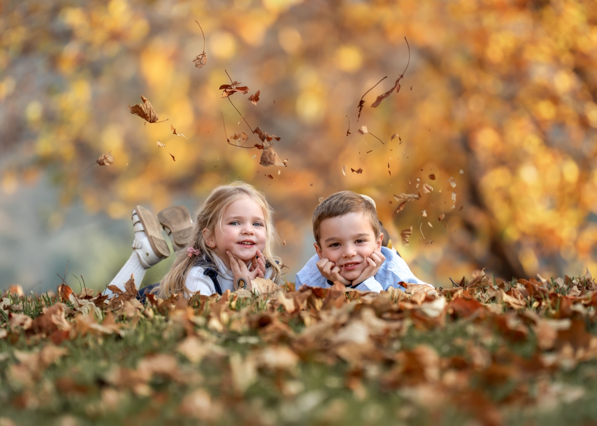
Aseguras uno de los 6 cupos disponibles.
Recibes mi guía de vestuario y preparación.
Hasta 60 minutos en una locación exterior.
Recibes una galería privada en revelado inicial.
Trabajo cuidadosamente las imágenes que seleccionaste.
Recibes tus fotografías finales en 2 a 3 semanas.
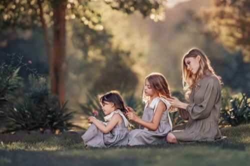
“Fue una experiencia mucho más tranquila de lo que imaginaba. Bernardita nos guió en todo momento y logró capturar la esencia de nuestra familia de una forma muy natural.”
— Marcia R. - Miami
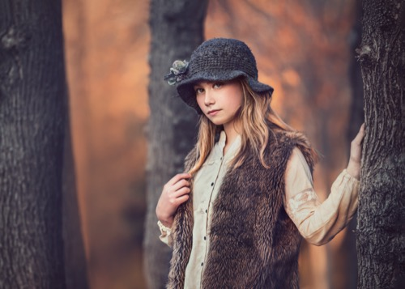
“Cuando vimos las fotos sentimos que realmente estaba nuestra familia ahí. No son solo fotografías, son recuerdos que vamos a guardar para siempre.”
— María José
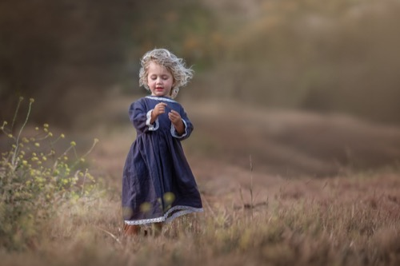
“No puedo dejar de mirar las fotos… captaste exactamente cómo somos”
— Patricia P - Santiago
Estaré en Scarsdale por pocos días y tendré disponibilidad para realizar estas fotografías.
No. Yo los dirijo con indicaciones simples y naturales durante toda la sesión, así que no necesitan experiencia ni saber posar. Mi trabajo es lograr que se sientan cómodos y que las fotos salgan espontáneas.
Sí, las mascotas son bienvenidas. Muchas familias eligen incluir a su perro o gato en algunas de las fotos, y con gusto los incorporamos a la sesión.
Es completamente normal, sobre todo con los más pequeños. Tengo experiencia trabajando con niños y adapto la sesión a su ritmo y su ánimo del día, buscando momentos genuinos en vez de forzar poses.
Al reservar te envío una guía de vestuario con paleta de colores y sugerencias según la colección elegida, para que toda la familia luzca coordinada sin verse forzada.
En una locación exterior en Scarsdale, elegida por mí para aprovechar la luz y los colores del otoño. La dirección exacta se confirma antes de la sesión según el horario y el clima. Si lo prefieren, también puedo ir a su casa a realizar la sesión.
Una semana después de la sesión recibirán una galería privada con las imágenes en revelado inicial, donde eligen sus favoritas según la cantidad incluida en su colección.
Es la etapa final de mi proceso creativo, cuando le doy mi estilo único y elegante a las fotos. Es una edición artesanal y cuidada, imagen por imagen, donde trabajo la luz, el color y los detalles a mano para lograr un estilo atemporal y reconocible, muy distinto a un ajuste automático, dejando las fotos listas para su impresión en papel Fine Art.
Sí. Además de las fotografías incluidas en tu colección, puedes adquirir imágenes adicionales de tu galería de selección por separado. También puedes mandar a hacer Fine Art prints, ampliaciones y photobooks.
Solo 6 familias tendrán esta oportunidad durante mi visita.
Ver paquetes y reservar